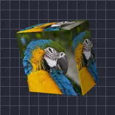

باکس

لیئر کو ایسے باکس پر لپیٹتا ہے جس کی چوڑائی، اونچائی اور گہرائی آپ منتخب کرتے ہیں۔
سیٹنگز
| سیٹنگ | قسم | رینج | ڈیفالٹ |
|---|---|---|---|
| روٹیشن X | زاویہ | -3600° سے 3600° تک | -20° |
| روٹیشن Y | زاویہ | -3600° سے 3600° تک | -35° |
| روٹیشن Z | زاویہ | -3600° سے 3600° تک | 0° |
| چوڑائی | نمبر | 0.02 سے 5 تک | 0.75 |
| اونچائی | نمبر | 0.02 سے 5 تک | 0.75 |
| گہرائی | نمبر | 0.01 سے 5 تک | 0.4 |
| اسموتھنگ | نمبر | 0 سے 1 تک | 0.15 |
| پوزیشن | پوائنٹ (X, Y) | -5000 px سے 5000 px تک | 0 px, 0 px |
| اسکیل | نمبر | 0.05 سے 10 تک | 1 |
| پرسپیکٹیو | نمبر | 0 سے 1 تک | 0.5 |
| شیڈنگ | نمبر | 0 سے 1 تک | 0.6 |
| روشنی کا زاویہ | زاویہ | -3600° سے 3600° تک | 135° |
| چمک | نمبر | 0 سے 1 تک | 0.3 |